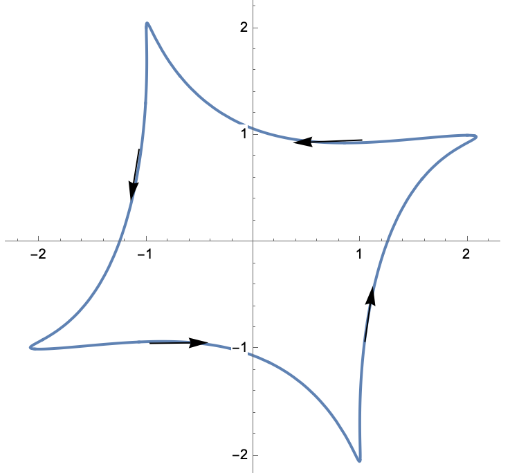
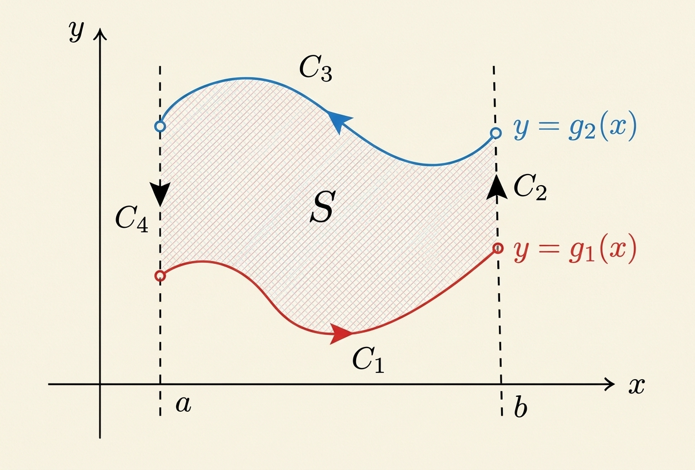
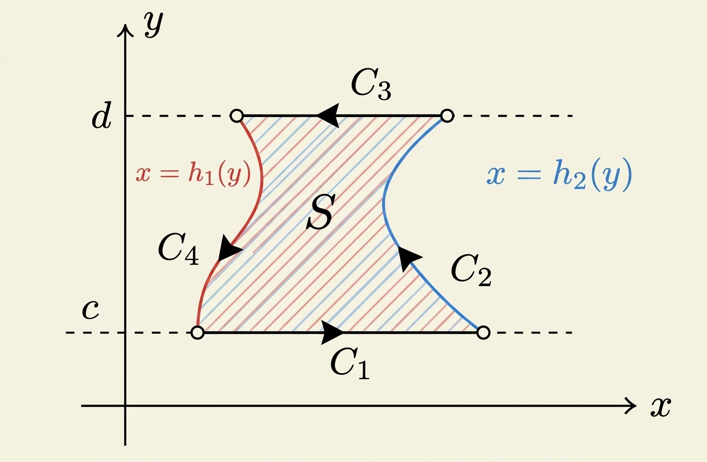

Sea \(U\subseteq \mathbb{R}^2\) un abierto y \(\mathcal{S}\subset U\) un subconjunto compacto con interior no vacío tal que \(\partial \mathcal{S} \subset U\) es una:
Supongamos que \(P,Q:U \to \mathbb{R}\) son funciones clase \(C^1\) en \(U\). Si \(\partial S\) está orientada en contra de las manecillas del reloj entonces
\[ \int_{\mathcal{S}} (\partial_xQ - \partial_y P) dx dy= \int_{\partial \mathcal{S}} Pdx+Qdy \]

La demostración en una región general se logra demostrando primero las dos identidades parciales por separado:
Sumando ambas identidades obtendremos la igualdad completa del teorema.
Caso 1: $S$ es una región de Tipo I.

Integral de área.
Consideremos que $S$ es una región de Tipo I descrita como: $$S = \{ (x, y) \in \mathbb{R}^2 : x \in [a, b], \, g_1(x) \le y \le g_2(x) \},$$ donde $g_1, g_2 : [a, b] \to \mathbb{R}$ son funciones continuas, suaves a trozos.
Aplicando el Teorema de Fubini para integrar sobre la región de Tipo I: $$\iint_S -\frac{\partial P}{\partial y} \, dx \, dy = \int_{a}^{b} \left( \int_{g_1(x)}^{g_2(x)} -\frac{\partial P}{\partial y} \, dy \right) dx.$$
Por el Teorema Fundamental del Cálculo aplicado a la integral interior respecto a $y$: $$\int_{g_1(x)}^{g_2(x)} -\frac{\partial P}{\partial y} \, dy = -\Big[ P(x, y) \Big]_{y=g_1(x)}^{y=g_2(x)} = -P(x, g_2(x)) + P(x, g_1(x))$$ Sustituyendo esto en la integral exterior obtendremos: \begin{equation}\label{Eqn:GreenTipoI} \iint_S -\frac{\partial P}{\partial y} \, dx \, dy = \int_{a}^{b} P(x, g_1(x)) \, dx - \int_{a}^{b} P(x, g_2(x)) \, dx \end{equation}
Integral de línea.
La frontera $\partial S$ se divide en 4 curvas recorridas en sentido contrario a las manecillas del reloj:
Sumando estas contribuciones: \begin{eqnarray}\label{Eqn:GreenIntegralLineaTipoI} \int_{\partial S} P \, dx = \int_{a}^{b} P(x, g_1(x)) \, dx - \int_{a}^{b} P(x, g_2(x)) \, dx \end{eqnarray}
Comparando las ecuaciones \eqref{Eqn:GreenTipoI} y \eqref{Eqn:GreenIntegralLineaTipoI}, obtenemos: $$\iint_S -\frac{\partial P}{\partial y} \, dx \, dy = \int_{\partial S} P \, dx$$
Caso 2: $S$ es una región de Tipo II.

En este caso tenemos que $$S = \{ (x, y) \in \mathbb{R}^2 : c \le y \le d, \, h_1(y) \le x \le h_2(y) \}$$ donde $h_1, h_2 : [c, d] \to \mathbb{R}$ son funciones continuas (suaves a trozos) que definen las fronteras izquierda y derecha de la región, respectivamente.
Integral de línea.
La frontera $\partial S$ se divide en 4 curvas recorridas en sentido contrario a las manecillas del reloj:
Sumando todas las contribuciones de las cuatro curvas, obtenemos: \begin{eqnarray} \int_{\partial S} P \, dx &=& \int_{h_1(c)}^{h_2(c)} P(x, c) \, dx - \int_{h_1(d)}^{h_2(d)} P(x, d) \, dx \nonumber \\ &+& \int_{c}^{d} P(h_2(y), y) \, h_2'(y) \, dy - \int_{c}^{d} P(h_1(y), y) \, h_1'(y) \, dy \label{Eqn:AuxGreenLineaRegionII}. \end{eqnarray}
Para continuar vamos a definir la función auxiliar $H(y):= \int_{h_1(y)}^{h_2(y)} P(x, y) \, dx$. Ya que $P$ es clase $C^1$ y $h_2,h_1$ son funciones continuas suaves a trozos, $H$ es diferenciable con derivada continua y aplicando el Teorema Fundamental del Cálculo, obtenemos: \begin{eqnarray} \int_c^d H'(y) \, dy &=& H(d) - H(c) \nonumber \\ &=& \int_{h_1(d)}^{h_2(d)} P(x, d) \, dx - \int_{h_1(c)}^{h_2(c)} P(x, c) \, dx \label{Eqn:AuxGreenIntegralH}. \end{eqnarray}
Ahora vamos a calcular la derivada de $H(y)$ usando la siguiente función de tres variables: \[ G(y_1,y_2,y_3)=\int_{y_1}^{y_2} P(x,y_3) \, dx. \] Usando a $G$ podemos escribir a $H(y)$ como \[ H(y)=G(h_1(y),h_2(y),y). \] Entonces por la regla de la cadena tenemos: \begin{eqnarray*} H'(y) &=& \frac{\partial G}{\partial y_1}(h_1(y),h_2(y),y)h_1'(y) \\ &+& \frac{\partial G}{\partial y_2}(h_1(y),h_2(y),y)h_2'(y) \\ &+& \frac{\partial G}{\partial y_3}(h_1(y),h_2(y),y). \end{eqnarray*} Además por el teorema fundamental del cálculo, tenemos que: \begin{eqnarray*} \frac{\partial G}{\partial y_1}(y_1,y_2,y_3) &=& -P(y_1,y_3), \\ \frac{\partial G}{\partial y_2}(y_1,y_2,y_3) &=& P(y_2,y_3), \\ \end{eqnarray*} y por el lema de diferención bajo el signo de integral, tenemos que: \[ \frac{\partial G}{\partial y_3}(y_1,y_2,y_3) = \int_{y_1}^{y_2} \frac{\partial P}{\partial y_3}(x,y_3) \, dx. \]
Por lo tanto: \begin{eqnarray} H'(y) &=& -P(h_1(y),y)h_1'(y) + P(h_2(y),y)h_2'(y) \nonumber \\ &+& \int_{h_1(y)}^{h_2(y)} \frac{\partial P}{\partial y}(x,y) \, dx \label{Eqn:AuxGreenDerivadaH} \end{eqnarray}
Substituyendo \eqref{Eqn:AuxGreenDerivadaH} en \eqref{Eqn:AuxGreenIntegralH}, obtenemos: \begin{eqnarray*} & & \int_{h_1(c)}^{h_2(c)} P(x, d) \, dx - \int_{h_1(d)}^{h_2(d)} P(x, c) \, dx \\ &=& -\int_{c}^d H'(y) \, dy \\ &=& \int_c^d P(h_1(y),y)h_1'(y) \, dy - \int_c^d P(h_2(y),y)h_2'(y) \, dy \\ &-& \int_c^d \int_{h_1(y)}^{h_2(y)} \frac{\partial P}{\partial y}(x,y) \, dx \, dy. \end{eqnarray*}
Por último, substituyendo esto en \eqref{Eqn:AuxGreenLineaRegionII}, obtenemos: \begin{eqnarray*} \int_{\partial S} P \, dx &=& \int_{h_1(c)}^{h_2(c)} P(x, c) \, dx - \int_{h_1(d)}^{h_2(d)} P(x, d) \, dx \\ &+& \int_{c}^{d} P(h_2(y), y) \, h_2'(y) \, dy - \int_{c}^{d} P(h_1(y), y) \, h_1'(y) \, dy \\ &=& \int_c^d P(h_1(y),y)h_1'(y) \, dy - \int_c^d P(h_2(y),y)h_2'(y) \, dy \\ &-& \int_c^d \int_{h_1(y)}^{h_2(y)} \frac{\partial P}{\partial y}(x,y) \, dx \, dy \\ &+& \int_{c}^{d} P(h_2(y), y) \, h_2'(y) \, dy - \int_{c}^{d} P(h_1(y), y) \, h_1'(y) \, dy \\ &=& \int_c^d \int_{h_1(y)}^{h_2(y)} -\frac{\partial P}{\partial y}(x,y) \, dx \, dy \\ &=& \int_S -\frac{\partial P}{\partial y} \, dx \, dy. \end{eqnarray*}
Caso 3: $S$ es una región general.
En éste caso $S$ se puede descomponer en una unión finita de subregiones $S = S_1 \cup S_2 \dots \cup S_k$ de Tipo I ó II. Las integrales sobre las fronteras interiores se cancelarán por tener orientaciones opuestas, obteniéndose el resultado general.